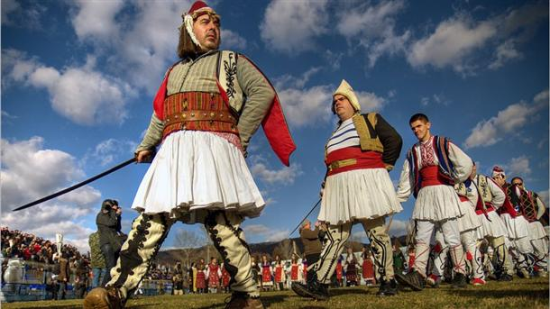

През този период според българския фолклор навън бродят всякакви нечисти сили, зли духове и караконджули, носители на болести и мор по хората и добитъка.
Русалиите били дружини от по 20-60 неженени момци, които с песните и танците си гонели злите сили. Дружината играела под звуците на зурни и тъпан. На първия ден
на Божик (Коледа) те се прощавали с близките си и тръгвали да обикалят къщите и селата. Русалиите имали установен свой ред. Вървели винаги по двойки едни след
други - в две колони, и всеки стъпвал в стъпките на предходния. Не позволявали никому да прекъсне веригата или хорото им, с изключение на болни хора. През тези
дни, докато са в групата, русалиите не говорели помежду си. Изключение правел само балтаджията (водача).
Те не се кръстели, не поздравявали близки и познати, не
спели у дома си или у роднини. Нощта никога не ги заварвала на открито. Русалиите никога не газели вода, не влизали в къща, където има бременна жена. Ако
прехвръкнела някоя домашна птица над тях, убивали я. Никога не ходели сами, а винаги по двойки, за да се пазят взаимно от зли духове. Затова и в танците им
изобилстват движения с ръцете и сабите, сякаш се пазят от въображаем противник. Русалиите играели около стари дървета, пресъхнали кладенци, стари гробища,
кръстопътища и други места, където се смятало, че има зли сили и духове. Като ги обикаляли по три пъти със своите танци, се вярвало, че тези места се пречистват.
Вярвало се също, че ако играят с кръстосани саби около болен, той оздравява.
|
 |